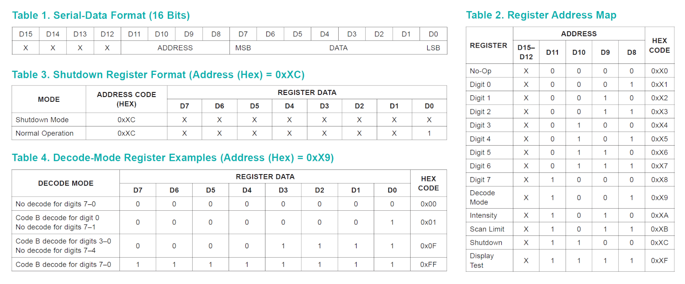

การใช้งานไอซี MAX7219 กำหนดสถานะลอจิกให้ LEDs#
▷ MAX7219#
ไอซี MAX7219 (Datasheet) ของบริษัท Maxim Integrated / Analog Devices มักนิยมนำมาใช้สำหรับควบคุมการแสดงผลด้วย LED แบบหลายดวง โดยแบ่งการทำงานเป็น 2 ลักษณะ ตามรูปแบบการใช้งาน ได้แก่
- การใช้งานกับโมดูล 7-Segment Display: สามารถควบคุมได้ทั้งหมด 8 ชุด (8 หลักของตัวเลข หรือ Digits)
- การใช้งานกับโมดูล 8x8 LED Matrix Display: ใช้งานกับ 8x8 LEDs ต่อไอซีหนึ่งตัว
ตามเอกสารของผู้ผลิต ไอซี MAX7219 ใช้แรงดันไฟเลี้ยง (VCC) อยู่ในช่วง +4.0V ถึง +5.5V หรือ +5V (typ.) แต่ก็สามารถนำมาใช้กับ +3.3V ได้เช่นกัน
รูป: แผนผังแสดงตำแหน่งขาและคำอธิบาย (อ้างอิงจากเอกสารของผู้ผลิต)
รูป: บล็อกไดอะแกรมแสดงองค์ประกอบภายในของไอซี MAX7219
รูป: ตัวอย่างการใช้งานไอซี MAX7219 สำหรับ 8x8 Dot LED Matrix
รูป: ตัวอย่างการใช้งานไอซี MAX7219 สำหรับ 7-Segment Display (Common-Cathode) แบบ 8 หลัก
รูป: ตัวอย่างโมดูล 8-Digit 7-Segment Display (Common-Cathode) ที่ใช้ไอซี MAX7219 ควบคุมการทำงาน
รูป: ตัวอย่างโมดูล 32x8 MAX7219 Dot Matrix Display
ไอซีมีขา ISET เอาไว้ต่อเข้ากับตัวต้านทานภายนอกไปยัง VCC เพื่อกำหนดปริมาณกระแสสูงสุด (Peak Segment Current) สำหรับจ่ายให้ LED Segments
ไอซีมีขา I/O ที่ใช้ควบคุมการทำงานของ LEDs จำนวน 16 ขา (แพ็คเกจของไอซีมี 24 ขา) แบ่งเป็น 2 กลุ่มคือ
- 8x DIGITS (
DIG0..DIG7) หรือ Digit Driver Pins: ขาควบคุม จะมีเพียงหนึ่งขาในแต่ละช่วงเวลาที่แอคทีฟ (Active) - 8x SEGMENTS (
SEG_A..SEG_G,SEG_DP) หรือ Segment Driver Pins): ขาข้อมูลบิต จำนวน 8 บิต เช่น นำไปใช้กับ 8x LEDs สำหรับ 7-Segment + DP (Decimal Point) หรือ 8x LEDs ในหนึ่งแถวของ LED Matrix
การส่งข้อมูลไปยังไอซี MAX7219 เช่น จากไมโครคอนโทรลเลอร์ จะใช้สัญญาณเพียง 3 สัญญาณ ได้แก่
CLK(ความถี่สูงสุด 10MHz) สำหรับสัญญาณ ClockDIN(Serial-Data Input) สำหรับสัญญาณข้อมูลที่ถูกเลื่อนไปทีละบิต เพื่อเก็บในรีจิสเตอร์ภายในLOADหรือCS(Load-Data Input) สำหรับสัญญาณควบคุม เมื่อเกิดขอบขาขึ้นที่สัญญาณ LOAD ข้อมูลในรีจิสเตอร์เลื่อนบิตในขณะนั้น จะถูกนำไปใช้
การส่งคำสั่งและข้อมูลนั้น จะทำโดยใช้วิธีเลื่อนบิตเข้าไปทีละบิต (Bit Shifting) แบบ MSB First
เข้าไปที่ขา DIN ไปยังรีจิสเตอร์สำหรับการเลื่อนบิตและรับข้อมูล (Shift Register) ขนาด 16 บิต
และส่งออกได้ที่ขา DOUT (Serial-Data Output) ตามจังหวะสัญญาณ CLK
ดังนั้นข้อมูลมีขนาด 2 ไบต์ หรือ 16 บิต (D15 .. D0) สำหรับไอซี MAX7219 หนึ่งตัว
ถ้าต้องการควบคุมได้มากกว่าหนึ่งชุด โดยใช้ไอซี MAX7219 มากกว่าหนึ่งตัว นำมาต่อกันแบบ
Daisy-Chain โดยให้ขา DOUT เชื่อมต่อกับขา DIN ของไอซีที่อยู่ในลำดับถัดไป
ตัวอย่างการใช้งานในลักษณะนี้และพบเห็นได้บ่อย เช่น การทำป้ายไฟแสดงผล LED Matrix ที่มีความสูง 8 พิกเซล แต่มีความยาวมากกว่า 8 พิกเซล ถ้าต้องการขนาด 8x32 ก็ต้องใช้อุปกรณ์ทั้งหมด 4 ชุด นำมาต่อกันตามลำดับ เป็นต้น
การเขียนโปรแกรมไมโครคอนโทรลเลอร์ เพื่อเลื่อนบิตข้อมูลไปยัง MAX7219 ทำได้ 2 วิธีคือ
- การใช้ขา GPIO และสร้างสัญญาณ เพื่อใช้สำหรับ
CLKแล้วเลื่อนข้อมูลทีละบิต ออกไปสำหรับขาDIN - การใช้วงจร Hardware SPI ภายในชิปไมโครคอนโทรลเลอร์ ซึ่งจะทำได้เร็วและใช้ความถี่ของ Clock ได้สูงกว่าวิธีแรก
บิตที่ D11 .. D8 ของข้อมูล 16 บิต (ในรีจิสเตอร์สำหรับการเลื่อนบิตและรับข้อมูล)
เป็นตัวระบุคำสั่ง (Operation) ขนาด 4 บิต และแอดเดรสของรีจิสเตอร์เป้าหมาย (Register Address) ขนาด 4 บิต เช่น
- บิต
D15..D12: ไม่มีการใช้งาน (Don't care) - บิต
D11..D8: ใช้สำหรับการกำหนดแอดเดรสของรีจิสเตอร์ - บิต
D7..D0: ข้อมูลขนาด 8 บิต เพื่อเขียนลงในรีจิสเตอร์

รูป: ตารางเกี่ยวกับรีจิสเตอร์ภายใน
รีจิสเตอร์แต่ละตัวมีหน้าที่แตกต่างกัน เช่น
- รีจิสเตอร์ No-Op: การไม่ทำคำสั่งใด ๆ (No-Op = No Operation)
- รีจิสเตอร์ Digit 0 .. Digit 7: สำหรับการกำหนดค่าขนาดหนึ่งไบต์ตามแอดเดรสที่ระบุ เก็บข้อมูลลงในหน่วยความจำ 8x8 SRAM จำนวน 8 บิต ต่อหนึ่งแอดเดรส และนำไปใช้ในการกำหนดสถานะติดหรือดับของ LEDs
- รีจิสเตอร์ Decode Mode: การใช้งาน Code B Decode Mode ในโหมดนี้ถ้ามีการเปิดใช้งาน ข้อมูล 4 บิต จะถูกใช้เป็น BCD Code
(มี 16 กรณี หรือ ตัวอักขระ คือ
0-9,E,H,L,P,-และว่างเปล่า) และมีการแปลงโดยอัตโนมัติให้เป็นข้อมูล 8 บิต เพื่อนำไปใช้กับ 7-Segment Digit - รีจิสเตอร์ Intensity: การกำหนดระดับความสว่าง ซึ่งมีให้เลือกตั้งค่าได้ทั้งหมด 16 ระดับ
- รีจิสเตอร์ Scan Limit: การตั้งค่าจำนวนหลักสูงสุดที่มี ถ้าใช้ไม่ครบ 8 หลัก ในกรณีที่ใช้กับ 7-Segment Display
- รีจิสเตอร์ Shutdown: การเปิดหรือปิด LEDs คือ เลือกระหว่างโหมด Normal Mode กับ Shutdown Mode
- รีจิสเตอร์ Display Test: การเปิดหรือปิดโหมดการทดสอบ คือ การเลือกระหว่าง Normal Mode กับ Display Test ถ้าเป็นโหมดทดสอบ จะทำให้ LEDs ทุกดวงอยู่ในสถานะ ON
รูป: ตารางเกี่ยวกับรีจิสเตอร์ Intensity และ Scan Limit
การทำงานเพื่อควบคุม LEDs จำนวน 8 ชุด จะใช้วิธีที่เรียกว่า Time Multiplexing
โดยจะเรียงไปตามลำดับของสัญญาณควบคุม SEG_A .. SEG_G, SEG_DP
(แล้ววนซ้ำใหม่โดยอัตโนมัติด้วยอัตรา 800Hz) และในขณะเดียวกัน
ก็จะมีการอ่านค่าจากรีจิสเตอร์ขนาด 8 บิต แล้วส่งออกทีขา DIG0 .. DIG7 พร้อมกัน
แต่ละขาจ่ายกระแสได้สูงสุดประมาณ 40mA (Segment Drive Source Current)
▷ ไลบรารีสำหรับ MAX7219 เพื่อใช้ในการเขียนโค้ดด้วย Arduino#
เนื่องจากไอซีและโมดูล MAX7219 มีการใช้งานมาหลายปี จึงมีการจัดทำเป็นไลบารี ที่เป็น Open Source เพื่อนำไปใช้ในการเขียนโค้ด Arduino Sketch และจะเห็นได้ว่า มีไลบรารีให้เลือกใช้งาน อยู่จำนวนไม่น้อย (บางตัวเลือก ก็ไม่ได้มีการอัปเดตแล้วหลายปี) เช่น
github:olikraus/U8g2_Arduinogithub:adafruit/Adafruit_LED_Backpackgithub:MajicDesigns/MD_MAX72XXgithub:JemRF/max7219github:nickgammon/MAX7219_Dot_Matrixgithub:ozhantr/DigitLedDisplaygithub:markruys/arduino-Max72xxPanelgithub:wayoda/LedControl
▷ การเขียนโค้ดและจำลองการทำงานด้วย Arduino Wokwi Simulator: 8x8 LED Matrix Display#
ตัวอย่างถัดไปเป็นการเขียนโค้ดด้วย Arduino Sketch เพื่อสาธิตการใช้งานโมดูล 8x8 LED Matrix Display โดยเลือกใช้วงจร SPI Master ของชิปไมโครคอนโทรลเลอร์บนบอร์ด Arduino Uno/Nano ทำหน้าที่เลื่อนข้อมูลไปยังไอซี MAX7219 เมื่อโปรแกรมทำงาน จะแสดงผลเป็นรูปสัญลักษณ์หัวใจ (Heart Symbol) ขนาด 8x8 พิกเซล ซึ่งมีสองขนาด (ใหญ่และเล็ก) และกระพริบได้
การใช้งานขา GPIO ของบอร์ด Arduino Uno/Nano มี 3 ขา มีดังนี้
- ขา Arduino D13 (SPI SCK) จะใช้สำหรับสัญญาณ CLK
- ขา Arduino D11 (SPI MOSI) จะใช้สำหรับสัญญาณ DIN
- ขา Arduino D10 จะใช้สำหรับสัญญาณ LOAD หรือ CS
#include <SPI.h>
// SPI Pins for Arduino Uno/Nano
//const int CLK_PIN = 13; // SPI SCK
//const int DIN_PIN = 11; // SPI MOSI
const int CS_PIN = 10; // SPI #CS
#define REG_DIGIT(x) (0x1+(x))
#define REG_DECODE_MODE (0x9)
#define REG_INTENSITY (0xA)
#define REG_SCAN_LIMIT (0xB)
#define REG_SHUTDOWN (0xC)
#define REG_DISPLAY_TEST (0xF)
const uint8_t BIG_HEART_SYM[] = { // Big heart symbol
0b00000000,
0b01100110,
0b11111111,
0b11111111,
0b01111110,
0b00111100,
0b00011000,
0b00000000
};
const uint8_t SMALL_HEART_SYM[] = { // Small heart symbol
0b00000000,
0b00000000,
0b00100100,
0b01111110,
0b00111100,
0b00011000,
0b00000000,
0b00000000
};
void MAX7219_WriteReg( uint8_t addr, uint8_t data ) {
digitalWrite( CS_PIN, LOW );
SPI.beginTransaction(SPISettings(4000000, MSBFIRST, SPI_MODE0));
SPI.transfer( addr );
SPI.transfer( data );
SPI.endTransaction();
digitalWrite( CS_PIN, HIGH );
}
void MAX7219_Init( uint8_t init_value = 0x00 ) {
MAX7219_WriteReg( REG_DECODE_MODE, 0x00 ); // No decode
MAX7219_WriteReg( REG_INTENSITY, 0x07 ); // Set intensity: 0x07=15/32
MAX7219_WriteReg( REG_SCAN_LIMIT, 0x07 ); // Scan limit: display digits 0-7
MAX7219_WriteReg( REG_SHUTDOWN, 0x01 ); // Shutdown: normal operation
MAX7219_WriteReg( REG_DISPLAY_TEST, 0x00 ); // Display test: no display test
for ( uint8_t i=0; i < 8; i++ ) {
MAX7219_WriteReg( REG_DIGIT(i), init_value ); // Clear display
}
MAX7219_WriteReg( REG_SHUTDOWN, 0x01 ); // Normal operation
}
void setup() {
SPI.begin(); // Use the default SPI pin settings.
pinMode( CS_PIN, OUTPUT );
digitalWrite( CS_PIN, HIGH );
MAX7219_Init(); // Initialize the MAX7219 display.
}
void update( uint8_t *data = NULL ) {
uint8_t value;
for ( int i=0; i < 8; i++) {
value = (data != NULL) ? data[i] : 0x00;
MAX7219_WriteReg( REG_DIGIT(i), value );
}
}
#define DELAY_MS (200)
void loop() {
static uint32_t ts_saved = 0;
uint32_t ts_now = millis();
static uint8_t index = 0;
if ( ts_now - ts_saved >= DELAY_MS ) {
ts_saved = ts_now;
if (index == 0 ) {
update( BIG_HEART_SYM );
} else if (index == 1 ) {
update( SMALL_HEART_SYM );
} else {
update( );
}
index = (index+1) % 4;
}
}
รูป: การเขียนโค้ด Arduino Sketch และจำลองการทำงานด้วย Arduino Wokwi Simulator โดยใช้บอร์ด Arduino Nano และโมดูล MAX7219 8x8 LED Dot Matrix (FC-16 Model) แบบเสมือนจริง
Arduino WokWi Simulator มีโมดูล
wokwi-max7219-matrix
ให้เลือกใช้งาน และสามารถตั้งค่าได้ว่า จะใช้สีอะไร และมีจำนวนโมดูลมากกว่าหนึ่งอันที่นำมาต่อกันได้
รูป: การตั้งค่าโมดูล MAX7219 Display ในไฟล์ diagram.json สำหรับ Wokwi Simulator
ถ้าจะลองใช้กับ ESP32-C3 ก็มีตัวอย่างโค้ดดังนี้ (เลือกใช้ขา GPIO สำหรับ SPI ซึ่งแตกต่างจากกรณีที่ใช้บอร์ด Arduino Uno/Nano)
#include <SPI.h>
// SPI Pins for ESP32-C3
const int SCK_PIN = 4; // SPI SCK
const int MOSI_PIN = 6; // SPI MOSI
const int MISO_PIN = 5; // SPI MISO
const int CS_PIN = 7; // SPI #CS
#define REG_DIGIT(x) (0x1+(x))
#define REG_DECODE_MODE (0x9)
#define REG_INTENSITY (0xA)
#define REG_SCAN_LIMIT (0xB)
#define REG_SHUTDOWN (0xC)
#define REG_DISPLAY_TEST (0xF)
const uint8_t BIG_HEART_SYM[] = {
0b00000000,
0b01100110,
0b11111111,
0b11111111,
0b01111110,
0b00111100,
0b00011000,
0b00000000
};
const uint8_t SMALL_HEART_SYM[] = {
0b00000000,
0b00000000,
0b00100100,
0b01111110,
0b00111100,
0b00011000,
0b00000000,
0b00000000
};
void MAX7219_WriteReg( uint8_t addr, uint8_t data ) {
digitalWrite( CS_PIN, LOW );
SPI.beginTransaction(SPISettings(4000000, MSBFIRST, SPI_MODE0));
SPI.transfer( addr );
SPI.transfer( data );
SPI.endTransaction();
digitalWrite( CS_PIN, HIGH );
}
void MAX7219_Init( uint8_t init_value = 0x00 ) {
MAX7219_WriteReg( REG_DECODE_MODE, 0x00 ); // No decode
MAX7219_WriteReg( REG_INTENSITY, 0x07 ); // Set intensity: 0x07=15/32
MAX7219_WriteReg( REG_SCAN_LIMIT, 0x07 ); // Scan limit: display digits 0-7
MAX7219_WriteReg( REG_SHUTDOWN, 0x01 ); // Shutdown: normal operation
MAX7219_WriteReg( REG_DISPLAY_TEST, 0x00 ); // Display test: no display test
for ( uint8_t i=0; i < 8; i++ ) {
MAX7219_WriteReg( REG_DIGIT(i), init_value ); // Clear display
}
MAX7219_WriteReg( REG_SHUTDOWN, 0x01 ); // Normal operation
}
void setup() {
SPI.begin( SCK_PIN, MISO_PIN, MOSI_PIN, CS_PIN ); // ESP32-C3
pinMode( CS_PIN, OUTPUT );
digitalWrite( CS_PIN, HIGH );
MAX7219_Init(); // Initialize the MAX7219 display.
}
void update( uint8_t *data = NULL ) {
uint8_t value;
for ( int i=0; i < 8; i++) {
value = (data != NULL) ? data[i] : 0x00;
MAX7219_WriteReg( REG_DIGIT(i), value );
}
}
#define DELAY_MS (200)
void loop() {
static uint32_t ts_saved = 0;
uint32_t ts_now = millis();
static uint8_t index = 0;
if ( ts_now - ts_saved >= DELAY_MS ) {
ts_saved = ts_now;
if (index == 0 ) {
update( (uint8_t*) BIG_HEART_SYM );
} else if (index == 1 ) {
update( (uint8_t*) SMALL_HEART_SYM );
} else {
update( );
}
index = (index+1) % 4;
}
}
รูป: การจำลองการทำงานของ MAX7219 ร่วมกับบอร์ด ESP32-C3
▷ ตัวอย่างการใช้งาน 4-Segment 8x8 LED Matrix Display#
ตัวอย่างนี้สาธิตการเขียนโค้ดสำหรับ Arduino ESP32 เพื่อกำหนดค่าพิกเซลให้โมดูลแสดงผลแบบ
MAX7219 8x8 Display ที่นำมาต่อกัน 4 โมดูล (NUM_DEVICES เท่ากับ 4)
โดยจะเขียนข้อมูลลงในบัฟเฟอร์สำหรับข้อมูลพิกเซล (เก็บในอาร์เรย์ pixels[])
แล้วจึงนำไปใช้เพื่ออัปเดตข้อมูลในหน่วยความจำของโมดูล MAX7219 โดยการเลื่อนข้อมูลบิตด้วยบัส SPI
เมื่อโปรแกรมเริ่มทำงาน พิกเซลมุมซ้ายบนจะเปลี่ยนเป็นสถานะ ON และเพิ่มขึ้นในตำแหน่งถัดไปจากซ้ายไปขวา เมื่อครบหนึ่งแถวแล้วจึงขึ้นแถวใหม่ไปตามลำดับ และเมื่อพิกเซลในทุกตำแหน่งเป็น ON แล้ว จึงทำขั้นตอนซ้ำโดยเปลี่ยนเป็น OFF ไปตามลำดับ
#include <SPI.h>
// SPI Pins for ESP32
const int SCK_PIN = 18; // SPI SCK
const int MOSI_PIN = 23; // SPI MOSI
const int MISO_PIN = 19; // SPI MISO
const int CS_PIN = 5; // SPI #CS
#define NUM_DEVICES (4)
#define PIXELS_PER_ROW (8*NUM_DEVICES)
uint8_t pixels[8*NUM_DEVICES] = {0}; // frame buffer
void setup() {
Serial.begin(115200);
pinMode(CS_PIN, OUTPUT);
digitalWrite(CS_PIN, HIGH);
SPI.begin(SCK_PIN, MISO_PIN, MOSI_PIN, CS_PIN);
max7219_init(); // Initialize the display
}
void loop() {
static uint8_t value = 1;
static uint16_t i=0;
max7219_set_pixel( i/PIXELS_PER_ROW, i%PIXELS_PER_ROW, value );
max7219_update( pixels );
i++;
if (i>= (8*PIXELS_PER_ROW)) {
i=0;
value ^= 1;
}
delay(20);
}
void max7219_write( int reg_index, uint8_t value ) {
digitalWrite(CS_PIN, LOW);
for (int i=0; i < NUM_DEVICES; i++) {
SPI.transfer(reg_index);
SPI.transfer(value);
}
digitalWrite(CS_PIN, HIGH);
}
void max7219_clear() {
for (int row=0; row < 8; row++) {
max7219_write(1+row, 0x00);
}
}
void max7219_update( uint8_t *data ) {
for ( int j=0; j < 8; j++ ) {
digitalWrite(CS_PIN, LOW);
for (int i=0; i < NUM_DEVICES; i++) {
SPI.transfer(1+j);
SPI.transfer(data[j*NUM_DEVICES+i]);
}
digitalWrite(CS_PIN, HIGH);
}
}
void max7219_init() {
max7219_write(0xf, 0); // Disable test mode
max7219_write(0xb, 7); // Set scanlines to 8
max7219_clear();
max7219_write(0xc, 1); // Enable display
}
void max7219_set_pixel( int r, int c, uint8_t b ) {
// 4 bytes x 8 rows
uint8_t *p = &pixels[(c/8) + r*NUM_DEVICES];
if (b) {
*p |= 1<<(c%8);
} else {
*p &= ~(1<<(c%8));
}
}
รูป: การจำลองการทำงานของ MAX7219 ร่วมกับบอร์ด ESP32
ตัวอย่างไฟล์ diagram.json สำหรับ Wokwi Simulator
{
"version": 1,
"author": "Anonymous maker",
"editor": "wokwi",
"parts": [
{ "type": "wokwi-esp32-devkit-v1",
"id": "esp", "top": 80, "left": 0, "attrs": {} },
{
"type": "wokwi-max7219-matrix",
"id": "matrix1",
"top": -20,
"left": -155,
"attrs": { "chain": "4" }
}
],
"connections": [
[ "esp:TX0", "$serialMonitor:RX", "", [] ],
[ "esp:RX0", "$serialMonitor:TX", "", [] ],
[ "esp:D23", "matrix1:DIN", "green", [ "h110", "v-95" ] ],
[ "esp:D5", "matrix1:CS", "green", [ "h120", "v0" ] ],
[ "esp:D18", "matrix1:CLK", "green", [ "h100", "v-135" ] ],
[ "esp:GND.1", "matrix1:GND", "black", [ "h135", "v-20" ] ],
[ "esp:3V3", "matrix1:V+", "red", [ "v0", "h145", "v-250" ] ]
],
"dependencies": {}
}
▷ กล่าวสรุป#
บทความนี้ได้กล่าวถึง หลักการทำงานของไอซี MAX7219 ซึ่งมักพบว่า มีการนำมาใช้ควบคุมการแสดงผลของ 7-Segment Display หรือ 8x8 LED Dot Matrix และมีตัวอย่างการเขียนโค้ดด้วย Arduino เพื่อสาธิตการทำงานในเบื้องต้น
This work is licensed under a Creative Commons Attribution-ShareAlike 4.0 International License.
Created: 2023-09-30 | Last Updated: 2023-10-18